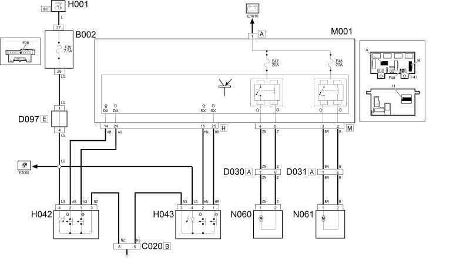

E3050 FRONT ELECTRIC WINDOWS - WIRING DIAGRAM
- Path
- Electrical equipment > 1 ELECTRICAL FUNCTIONS > E30 Electrically activated devices > E3050 ELECTRIC FRONT WINDOWS > E3050 FRONT ELECTRIC WINDOWS - WIRING DIAGRAM
- Kind
- wiring diagram
- Applies to
- all engines; all production periods; only with equipment: Right hand drive
- Interactive page
- https://sloeber94.github.io/elrnDB-fPnd/en/#/169004767
Applies to: all engines; all production periods; only with equipment: Right hand drive
Wiring Diagram

COMPONENTS
Applies to: all engines; all production periods
Component code | Description | Reference to the assembly |
|---|---|---|
JUNCTION UNIT UNDER DASHBOARD | ||
PASSENGER SIDE DASHBOARD EARTH | - | |
REAR COUPLING FOR /FRONT DOOR. DRIVER'S SIDE | - | |
RIGHT FRONT DOOR REAR COUPLING/. | - | |
SHORT CIRCUITING COUPLING | - | |
IGNITION SWITCH | ||
DRIVER'S FRONT ELECTRIC WINDOW SWITCH | ||
PASSENGER'S FRONT ELECTRIC WINDOW SWITCH | ||
BODY COMPUTER | ||
FRONT LEFT ELECTRIC WINDOW MOTOR | ||
FRONT RIGHT ELECTRIC WINDOW MOTOR |
Topics linked from this page (14)
- 5505A multi-function components
- 5505C vehicle compartment wiring
- 7005M front electric windows
- B002 JUNCTION UNIT UNDER DASHBOARD
- C020 PASSENGER SIDE DASHBOARD EARTH
- D030 DRIVER'S FRONT DOOR COUPLING
- D031 PASSENGER FRONT DOOR COUPLING
- D097 SHORT CIRCUITING COUPLING
- H001 IGNITION SWITCH
- H042 DRIVER'S FRONT ELECTRIC WINDOW SWITCH
- H043 PASSENGER'S FRONT ELECTRIC WINDOW SWITCH
- M001 BODY COMPUTER
- N060 DRIVER'S FRONT DOOR ELECTRIC WINDOW MOTOR
- N061 RIGHT FRONT ELECTRIC WINDOW MOTOR